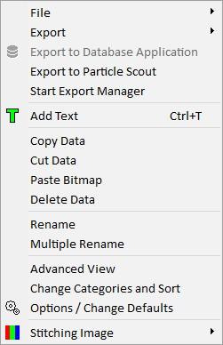

|
项目管理器上下文菜单
|
项目管理器的上下文菜单包含多种管理功能。可以通过在项目管理器中的任意位置点击并释放鼠标右键来打开它。

文件
通过文件菜单可以将选中的数据对象保存到WITec项目文件中，或通过WITec二进制导出文件格式进行导出。
导出
您可以使用 导出功能 导出一个或多个数据对象。
导出到数据库应用程序
根据 数据库导出选项，选中的单光谱数据对象将在外部数据库应用程序中打开，如 WITec TrueMatch数据库软件 或ACDLabs。另请参见 WITec Project中的数据库搜索。
导出到ParticleScout
将视频图像或拼接图像导出到 WITec ParticleScout。
启动导出管理器
启动 WITec导出管理器。
如果选择了数据对象，它们将被导出到导出管理器。
---
添加文本
添加一个新的 文本数据对象 用于添加自定义注释。
---
复制/剪切/粘贴数据
将选中的数据对象复制/剪切/粘贴到/从Windows剪贴板。
启动新的WITec Project实例时，剪贴板将被清空；数据会临时存储在硬盘上的WITec Temp目录中。复制数据对象时，相应的内部辅助数据对象（如变换）也会被自动复制。
删除数据
删除选中的数据对象。
---
重命名
重命名当前选中的数据对象。
批量重命名
打开 批量重命名对话框，该对话框允许一次重命名多个数据对象。
---
高级视图
显示所有内部数据对象（变换、解释...）。请仅在您完全了解操作内容时使用此功能。删除内部数据对象可能导致数据丢失或崩溃。
更改类别和排序
打开更改数据类别和排序模式的快速菜单。您也可以点击项目管理器的名称列标题来更改类别，或通过环形菜单打开该快速菜单。
选项 / 更改默认值
打开 项目管理器的程序选项。
---
数据对象子菜单（"拼接图像"）
如果选定了 一个 数据对象，上下文菜单底部会有一个针对该数据对象的特殊子菜单。子菜单的内容取决于所选数据对象的类型。